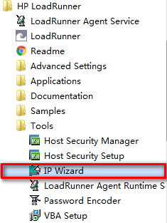
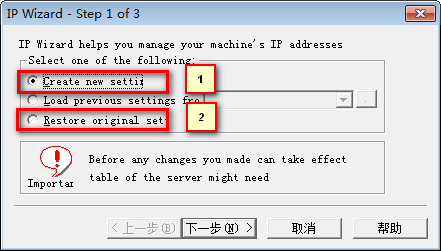
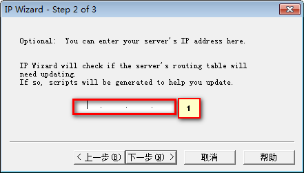
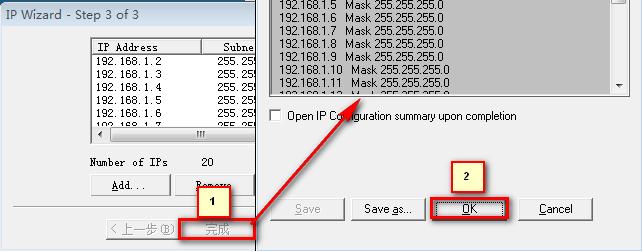
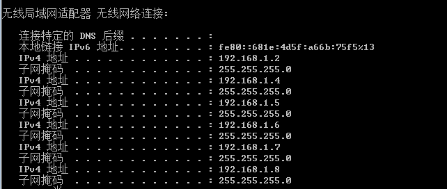
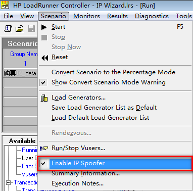
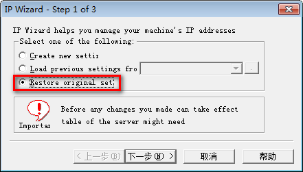
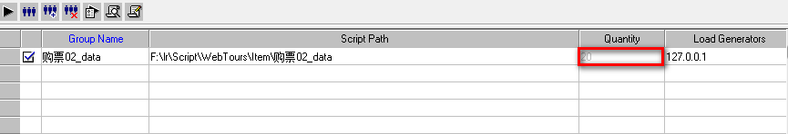
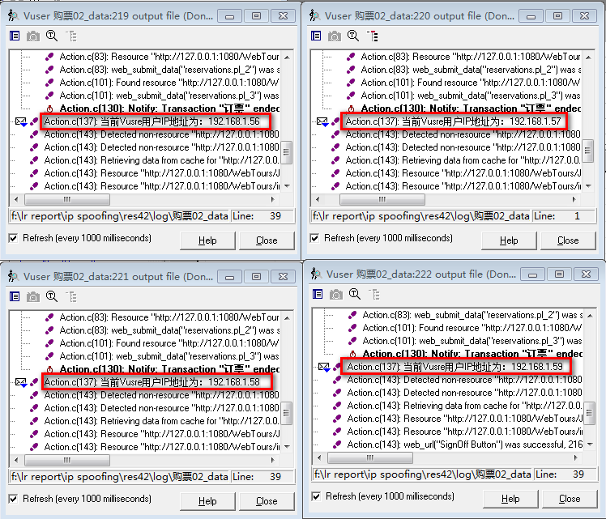
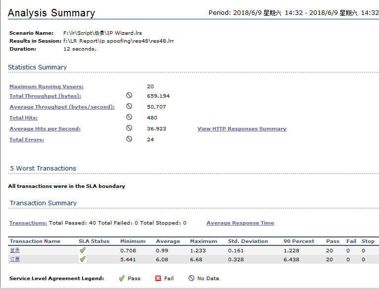

IP Wizard的应用
目标
- 理解 IP Wizard 的应用场景
- 了解 IP Wizard 的使用步骤
一、IP Wizard(IP 欺骗)【了解】
场景：
1. 对于某些应用服务器，是根据IP来分配资源，当某个IP地址访问频繁或者访问量过大时，服务器会拒绝访问，或者要求输入验证码；
2. 一些应用服务器，只允许一个IP地址，操作一次应用程序；例如：投票系统。
LoadRunner 的 IP Wizard 工具可以模拟出多个不同的 IP 地址，每个虚拟用户都可以使用不同的IP地址完成类似投票系统的真实场景的业务操作。
IP Wizard应用 步骤
- 配置：使用 IP Wizard 工具配置 IP
- 应用：运行场景时启用 Enabled IP Spoofer
配置-启动IP Wizard工具

开始菜单 -> HP LoadRunner -> Tools -> IP Wizard
注意：
启动IP Wizard工具时，电脑 IP 地址必须为【静态IP地址】，不可用 DHCP 动态获取
配置-选择类型 创建IP

1:创建IP（选择）
2:删除IP（测试完毕时使用）
配置-搜索服务器IP段地址

输入 IP 地址段，或为空
配置-IP列表

1:点击Add，添加IP对话框
2:选择IP类型，默认C类
3:添加IP起始段和Submask地址
4:批量添加IP的数量
配置-确定创建IP

1: 点击完成(确定以上列表内IP地址去创建)
2: 点击完成(创建)
查看创建成功

开始菜单 -> 运行 -> cmd -> ipconfig /all 查看添加IP
IP Wizard 应用

1). 勾选 Enabled IP Spoofer(启用IP欺骗)【必须】
2). 位置：菜单(Scenario) -> Enable IP Spoofer
删除IP

- 选择 Restore original set(恢复原始设置)
- 输入服务器IP地址
- 点击完成即可
使用IP Wizard 注意事项
- 使用 IP Wizard 必须确保 IP 地址为静态 IP，不能为动态(DHCP)IP
- 负载机必须启用 LoadRunner Agent Process 程序
- 运行场景时，启用 Enabled IP Spoofer 选项
- 虚拟用户模式选择进程模式(默认为线程)
(Run-time Settings for script -> Miscellaneous(其他) -> Multithreading -> Run Vuser as a process) - 启用专家模式 -> 菜单Tools -> Expert mode
- 设置多个 IP 模式为进程
菜单Tools -> options -> General -> Multiple Ip address mode(IP address allocation per process) - LoadRunner 安装目录下 dat 文件夹下 mdrv.dat 文件内 lr_socks 选项添加ExtCmdLineConc=-UsingWinInet Yes
- 忽略Web页面诊断
（菜单Diagnostics -> Diagnostrics Distribution -> Web Page Diagnostics...） - 负载机需要设置 IP Wizard
二、练习
需求：
1. 业务：订票
2. 场景：20个用户使用订票业务
3. 要求：每个虚拟用户使用不同的 IP 进行订票；
2.1 操作步骤
- 录制订票业务脚本
- 搭建订票场景 用户数20
- 使用IP Wizard工具生成20个IP地址
- 启用IP欺骗(Enable IP Spoofer)
- 运行场景-查看虚拟用户日志
- 查看Analysis Result报告
2.2 场景搭建 示意图

1. 虚拟用户:20
2. 场景模式：场景 + 基础计划
2.2 用户日志

每个用户有自己的IP
lr_get_vuser_ip() 函数可以获取虚拟用户IP地址
用法：
char *ip;
ip = lr_get_vuser_ip();
if (ip)
lr_output_message("The IP address is %s", ip);
else
lr_output_message("IP spoofing disabled");
2.3 Analysis Result报告
